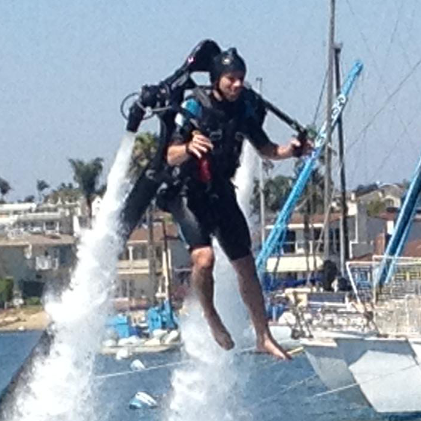
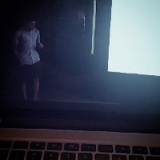

Email: drob@mit.edu
Twitter: @danintheory
Website: www.danintheory.com
(just redirects back here)
Dan Roberts
I’m a Ph.D. student at Center for Theoretical Physics at MIT funded by a Hertz Foundation Fellowship and the NDSEG. Previously, I was a Marshall Scholar in the UK. While there, I read for Part III of the Mathematical Tripos at Cambridge and then studied quantum computation at Oxford. In a previous life (undergrad), I worked on invisibility cloaks (metamaterials and transformation optics) with David R. Smith.
My name is very common, so I try my best to publish under more parts of my full name (which I never go by) Daniel Adam Roberts, which unfortunately also happens to be very common.
Research
I’m interested in black holes. I’m also interested in quantum information theory. Luckily, via the gauge/gravity duality or holography, these two subjects are intricately tied together: after years of needing to make a distinction between the acronyms for the very different concepts of wormholes (ER) and quantum entanglement (EPR), it turns out that they are actually descriptions of the same basic phenomenon, i.e. ER=EPR.*
*Though they still maintain their maiden names.
Some of my work focuses on what happens when something falls into black hole (in anti-de Sitter space). The black hole will very quickly scramble (but not destroy) the information. Black holes are thermal systems, and this process is actually a manifestation of the well known butterfly effect. We can try to think about this in terms tensor networks, or we study it in the dual conformal field theory as a way of understanding a distinguishing feature of quantum chaos.
I’m also interested in machine learning and AI. I recently competed in the MIT Pokerbots competition where participants build an AI bot to play three person pot-limit games of Texas hold ‘em. My team placed first out of 38 teams in a tournament over 600,000 hands played.
Education
- PhD, high energy theoretical physics (expected) 2016.
CTP, MIT - MSc by Research in Computer Science, 2011.
New College, University of Oxford - MASt in Mathematics, 2010.
St. John’s College, University of Cambridge - BSE/BS, Physics and Electrical & Computer Engineering, 2009.
Pratt School of Engineering, Duke University
Publications
Talks on YouTube
